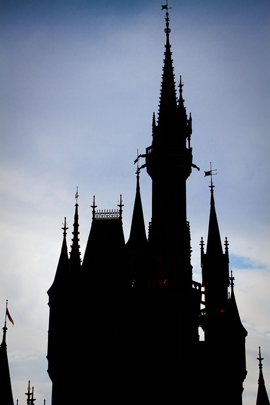
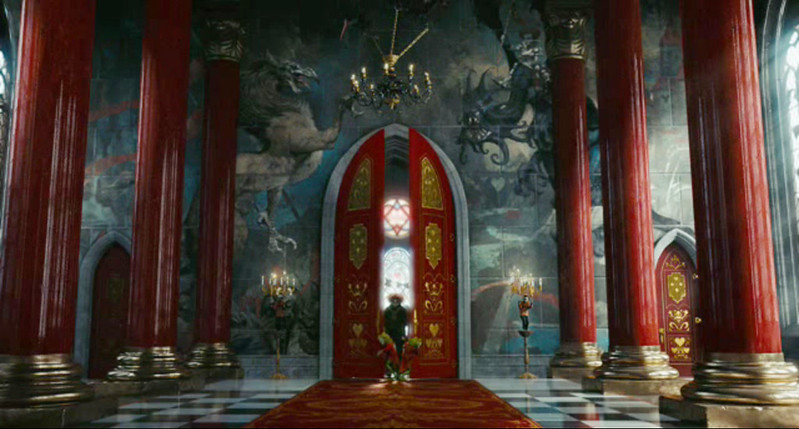

Hitman: Master, I sense the princess coming all by herself. Evil King: The crystal is now ours. You, kill the princess. I can't stand her messing with my plans! Hitman: Yes sir!
"Magic Kingdom - Castle Dark" by Jeff Krause Photography is licensed under CC BY-NC-ND 2.0. To view a copy of this licence, visit https://creativecommons.org/licenses/by-nd-nc/2.0/jp/?ref=openverse.
Princess Analia: Alright team. We gotta find a way to get in that dark castle! Dennis: Ani! Wait, I cannot allow you to by yourself. Have me, Chase Baxter and Melanie Phantom come with you! I will make sure no evil doesn't kidnap you! Princess Analia: Alright! As you say! Let's go everyone! Hitman: I don't think so! I have got the princess where I want her to be! Melanie Phantom: I'm gonna tell you this now. Analia is NOT going with you! So you better get out of our way or else we will fight you! Hitman: You underestmate me child. A fight what you get. Melanie Phantom: Dennis, you go with Princess Ani. Chase and I will deal with him!
"The Mad Hatter enters the Red Queens Throne Room (Queen of Hearts), door opened by two frogs in livery, with a wild mural of a gryphon wielding a sword and a dragon riden by the Queen of Hearts, painted on the far wall, seen through red columns" by Wonderlane is licensed under CC BY 2.0. To view a copy of this licence, visit https://creativecommons.org/licenses/by/2.0/?ref=openverse.
Evil King: Ah, looks like the princess has arrived to get the crystal. What a surprise. Princess Analia: Give it up now evil tyrant! Melanie Phantom: The crystal doesn't belong to you! Evil King: Hahaha! You thought I would give it to you. When you first ran into me, I defeated all of you the first time. This is the second time. If you win, the crystal will be yours. If I win, I will capture the princess and there will be no way to save her. Deal? Princess Analia: Very well. This is the final battle. Me and Melanie are a lot stronger to take you down! Evil King: Is that so fraglie princess? We'll see about that. Look at me. Feel the wrath of my power!